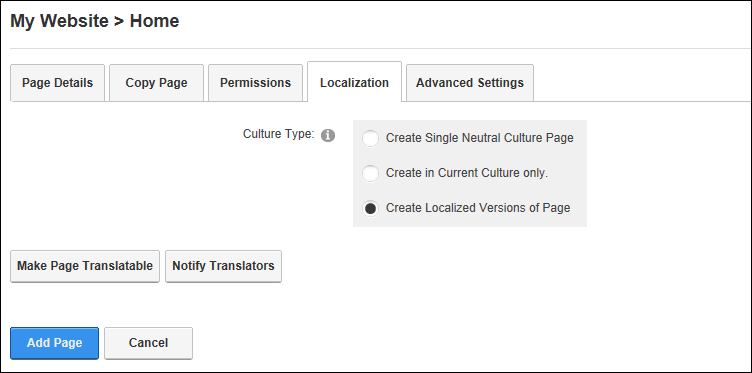

Localization Settings for New Pages
How to set the Localization setting for pages on the Page Settings page.
The Localization section is only displayed when content localization is enabled on the site. See "Enabling Localized Content"
- Select the Localization tab.
- At Culture Type, select from the following:
- Create Single Neutral Culture Page: Select to create "Language Neutral" page that will be visible in every language of the site. Language Neutral pages cannot be translated.
- Create in Current Culture Only: Select to only create a page for the language that you are currently viewing the site in.
- Create Localized Versions of Page: Select to create a version of this page for each language. This is the default option.

Note: If Create Localized Versions of Page is selected, the below information is displayed once the Add Page link is clicked. This will enable you to set pages as Ready for Translation, however you will most likely want to add modules and content beforehand.